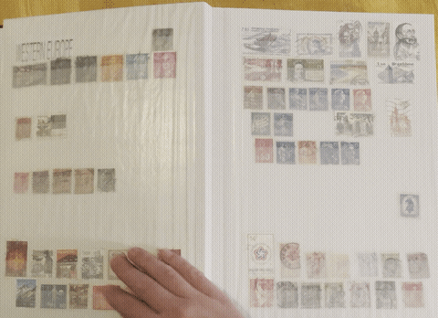

Stamps and I
I began collecting stamps in 2021, after visiting the Smithsonian's National Postal Museum in Washington, D.C. Before then, I had relatively little exposure to the hobby. While my dad has been a casual collector for decades, his whole collection boiled down to tearing the stamps off of mail delivered to our house, casually stored in stored in a box somewhere. I also consider myself a pretty casual collector, but philately has had a huge influence on my life, my art, and my views on archival theory and practice.

I have graphic tees about my love of stamps. Nearly every moodboard I made during my fashion design bachelor's featured a small postage stamp hidden somewhere. I've given stamps as gifts; I've recieved stamps as gifts. When I take up a hobby, I have a tendency to get obsessed. And I'm pretty much obsessed with postage.
The simplest reason I collect is because stamps are beautiful. They’re tiny, mass-produced works of art. Like all art, they can tell us about the culture that made them, their values and their histories. Stamps are artifacts of the countries that they represent. But the real reason I love stamps so much goes beyond the objects themselves. To me, postage stamps are each symbols of connection. The postal system invisibly ties us all together. A tiny postage stamp has the power to link any two addresses around the world. When we feel lonely and isolated, it's comforting to remember that we are always connected.
Interestingly, the way I talk about postage is similar to the ways people talk about the Internet, or rather, the ways people used to talk about the Internet. We initially saw the Internet as a way to bring people together, but more and more we've come to realize that it has made us feel more isolated and lonely. With my site, I want to explore an alternative to the web as we understand it today. This site was built for the simple purpose of sharing a passion, and I truly think that if we bring a hobbyist's perspective back to the Internet, we can reclaim to an earlier vision of this space.